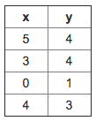
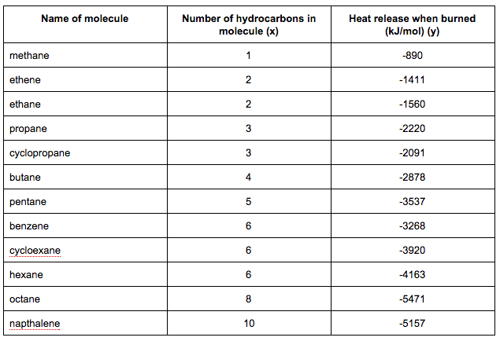

Consider the problem of predicting how well a student does in her second year of college/university, given how well she did in her first year. Specifically, let x be equal to the number of "A" grades (including A-. A and A+ grades) that a student receives in their first year of college (freshmen year). We would like to predict the value of y, which we define as the number of "A" grades they get in their second year (sophomore year). Here each row is one training example. Recall that in linear regression, our hypothesis is
, and we use m to denote the number of training examples.
Note: this table changes in every quiz

For the training set given above (note that this training set may also be referenced in other questions in this quiz), what is the value of m? In the box below, please enter your answer (which should be a number between 0 and 10).
4
Many substances that can burn (such as gasoline and alcohol) have a chemical structure based on carbon atoms; for this reason they are called hydrocarbons. A chemist wants to understand how the number of carbon atoms in a molecule affects how much energy is released when that molecule combusts (meaning that it is burned). The chemist obtains the dataset below. In the column on the right, “kJ/mol” is the unit measuring the amount of energy released.

You would like to use linear regression (
) to estimate the amount of energy released (y) as a function of the number of carbon atoms (x). Which of the following do you think will be the values you obtain for and ? You should be able to select the right answer without actually implementing linear regression.
Rationale: The value is always negative and sort of increases by around 500 per x++.
Suppose we set
. What is ?
This answer was not correct (- - - x), second try (x x - x) was also incorrect
Let
be some function so that outputs a number. For this problem, is some arbitrary/unknown smooth function (not necessarily the cost function of linear regression, so may have local optima). Suppose we use gradient descent to try to minimize as a function of and . Which of the following statements are true? (Check all that apply.)
The derivative is 0, so an update will not change the valuesSuppose that for some linear regression problem (say, predicting housing prices as in the lecture), we have some training set, and for our training set we managed to find some
such that . Which of the statements below must then be true? (Check all that apply.)
This original answer was wrong, as highlighted in the "and not"
For this question, assume that we are using the training set from Q1. Recall our definition of the cost function was
. What is ? In the box below, please enter your answer (Simplify fractions to decimals when entering answer, and '.' as the decimal delimiter e.g., 1.5).
Rationale:
Given the loss function and the values of
and not
This means:
Suppose we set
, in the linear regression hypothesis from Q1. What is ?
Rationale:
The hypothesis is
Suppose we set
, in the linear regression hypothesis from Q1. What is ?
Rationale:
The hypothesis is
Consider the linear regression model
Rationale: the model will be able to fit the data perfectly, so